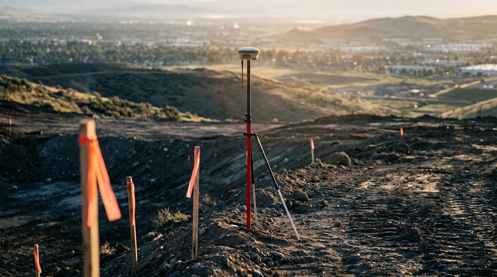
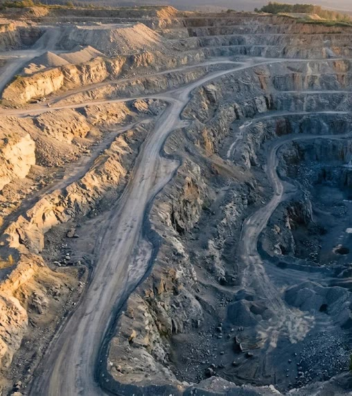
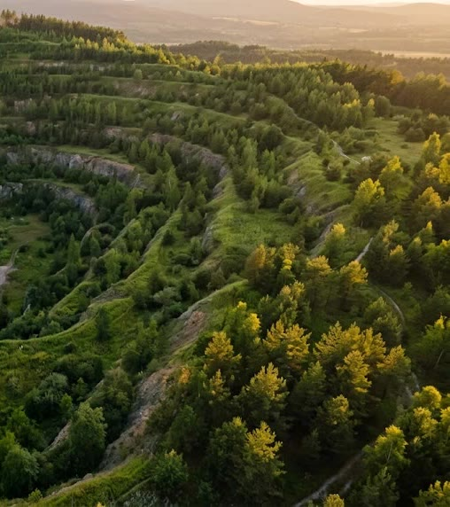
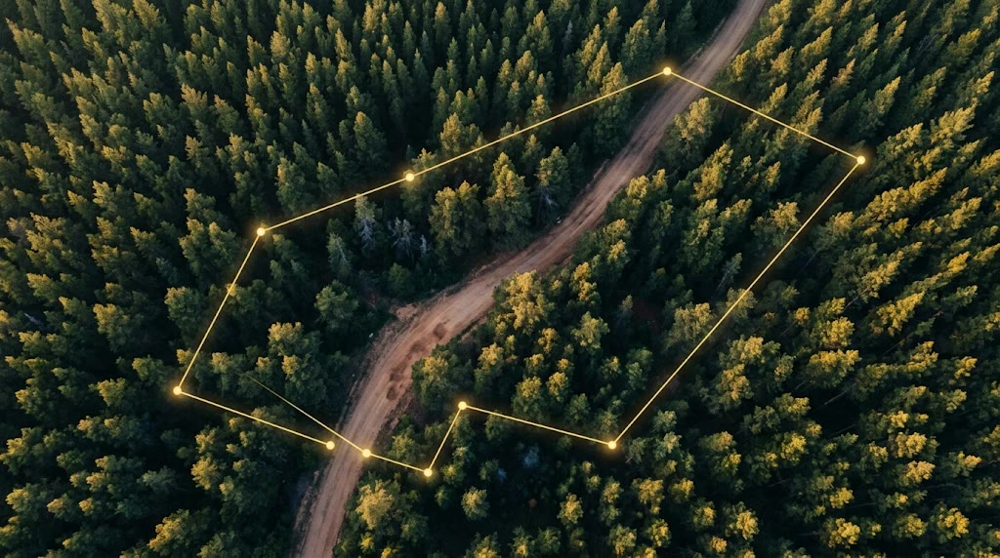
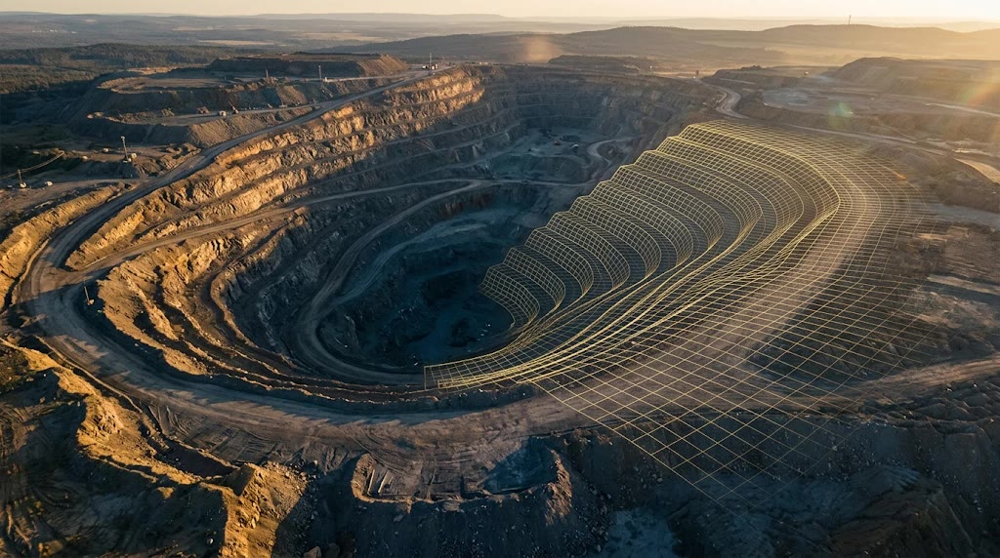
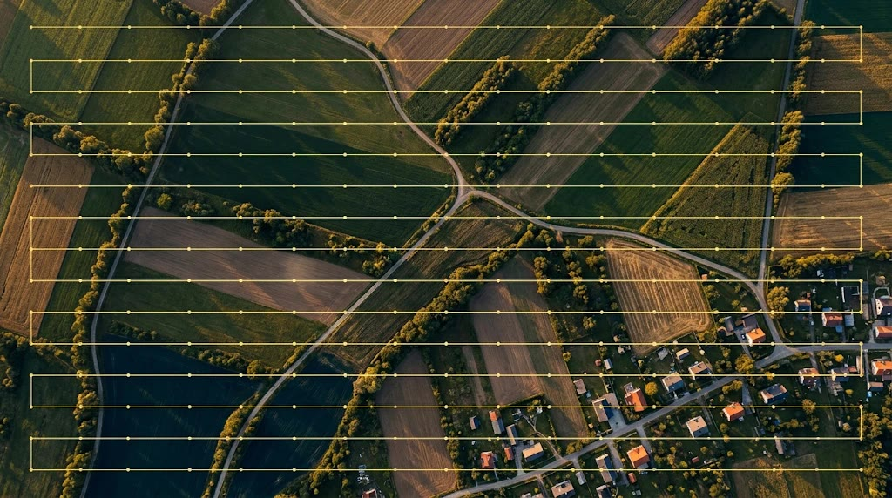
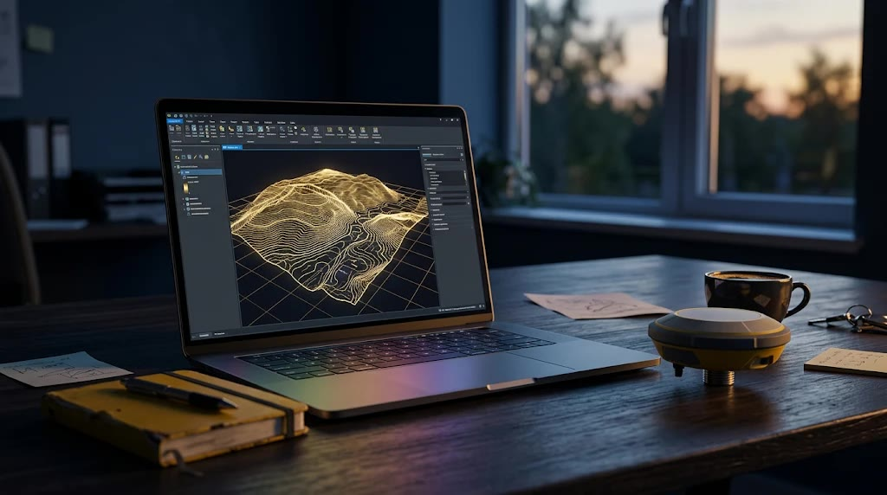

01Halihazır Harita ve İmalat Ölçümleri
Halihazır harita, imalat ve aplikasyon çalışmalarını GNSS/RTK ve klasik ölçme teknikleriyle santimetre hassasiyetinde yürütüyoruz.
- Halihazır harita
- Aplikasyon
- İmalat ölçümü
- Kesit ve kroki
Neler yapıyoruz
Harita mühendisliği, maden planlama ve dron teknolojisini bir araya getiriyor; sahadaki ilk ölçümden resmi kurumlara teslim edilen dosyaya kadar tüm süreci yönetiyoruz.

01Halihazır harita, imalat ve aplikasyon çalışmalarını GNSS/RTK ve klasik ölçme teknikleriyle santimetre hassasiyetinde yürütüyoruz.


ÖnceSonra 02İşletme termin planları ile maden sahalarının çevresel restorasyon ve rehabilitasyon projelerini mevzuata uygun şekilde hazırlıyoruz.

03Orman izin başvuruları için gereken harita ve koordinat dosyalarını hazırlıyor, izin alanının sahaya aplikasyonunu uçtan uca yönetiyoruz.

04Üç boyutlu açık ocak tasarımı ve sondaj modellemesi; dekapaj, kazı, dolgu ve rezerv hesaplarıyla saha planlamanızı sayısallaştırıyoruz.

05RTK destekli dronlarla kontrol noktasız hassas haritalama yapıyor; arazi ve gayrimenkul projeleri için profesyonel hava çekimi sunuyoruz.

06Kurumsal web sitelerinden mühendislik hesap araçlarına ve CBS uygulamalarına kadar, işinize özel yazılım çözümleri geliştiriyoruz.